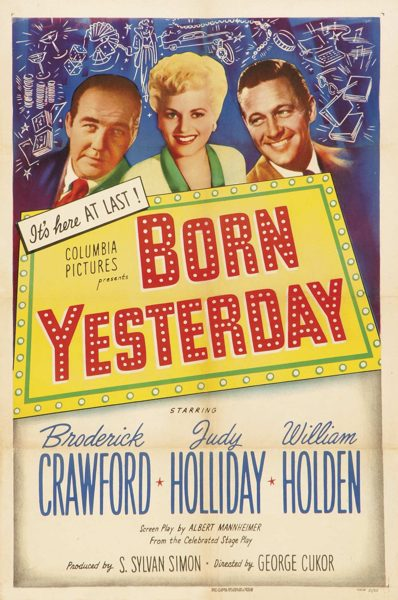

Born Yesterday
Starring: Judy Holliday, Broderick Crawford, William Holden
Director: George Cukor
Writer: Garson Kanin, Albert Mannheimer
Producer: S. Sylvan Simon
Born Yesterday is a 1950 American romantic comedy-drama film directed by George Cukor, based on the 1946 stage play of the same name by Garson Kanin. The screenplay was credited to Albert Mannheimer. According to Kanin's autobiography, Cukor did not like Mannheimer's work, believing it lacked much of the play's value, so he approached Kanin about adapting a screenplay from his own play.
Trivia
- Won the Academy Award for Best Actress.
- Also nominated for: Academy Award for Best Director; Academy Award for Best Writing, Adapted Screenplay; Academy Award for Best Costume Design, Black-and-White; Academy Award for Best Picture.
- Though all the major Hollywood studios wanted to film Garson Kanin's Broadway play Born Yesterday, Columbia Studios purchased the rights for $750,000 plus a percentage of the profits in 1947, the second most paid for screen rights to a play at the time behind the $1 million paid for Harvey.
- In April 1950, Columbia head Harry Cohn assigned George Cukor to direct the film, though Cukor was not the studio's first choice.
- Cukor's preparatory work for Born Yesterday was quite innovative.
Previous Showings
5 Runs • 4 Festivals
All runs on record (5):
- August 21 - 23, 1991w/ It Should Happen to You
- August 8 - 11, 1998Dear Old Hollywoodw/ It Should Happen to You
- April 9 - 13, 1999Directed by George Cukorw/ It Should Happen to You
- June 1 - 3, 2007Katharine Hepburnw/ State of the Union
- July 27 - 29, 2016Summer 2016w/ It Should Happen to You